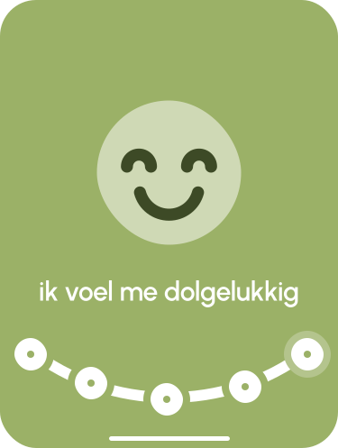
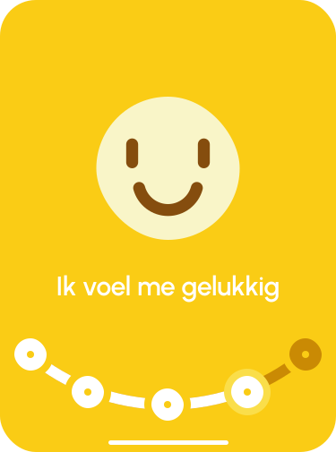
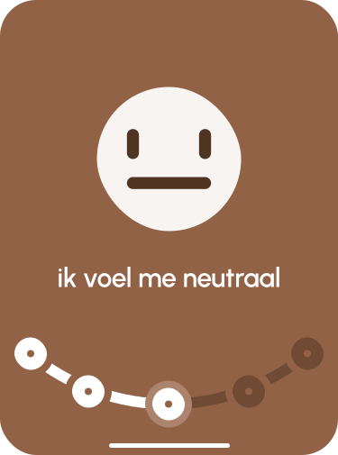
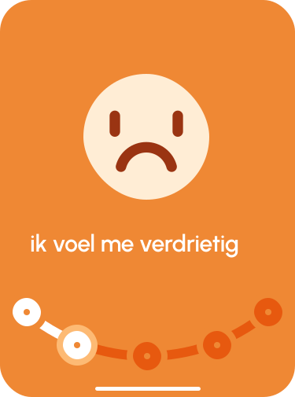

CGT Tool voor Mentale Gezondheid
Hoe voel je je vandaag?





Stemming: 5
Gedachtenlogboek
Wat waardeer je vandaag?
Mentale Gezondheid - Slaapdagboek
Slaapdagboek
Hoelaat ging je naar bed?
00:00
Hoelaat werd je wakker?
00:00
Ademhalingsoefening - 4-7-8 Techniek
Volg de ademhaling:
- Inademen door je neus voor 4 seconden
- Vasthouden voor 7 seconden
- Uitademen door je mond voor 8 seconden